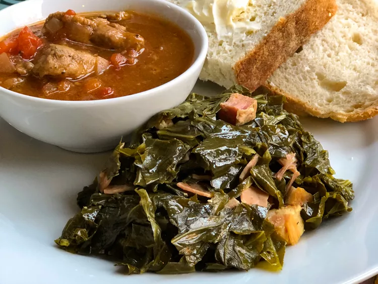

Instant Pot Collard Greens

Description
Preparation time: 10 minutes
Cook time: 20 minutes
Additional time: 25 minutes
Total time: 55 minutes
Servings: 6
Yield: 6 servings
Ingredients
- 1 bunch collard greens
- 4 thick slices bacon, cut into 1-inch pieces
- 4 cups water
- 2 tablespoons white vinegar
- 4 cups chicken broth
- salt to taste